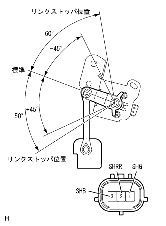
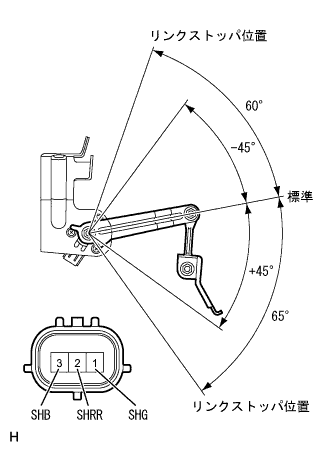

ハイトコントロールセンサASSY RR 単体点検 |
| 1. ハイトコントロール センサSUB-ASSY RR RH点検（駆動方式２ＷＤ） |
|  |
点検前準備
乾電池(1.5V)を3本、直列に接続する。
コネクターの3(SHB)端子に電池のプラスを、1(SHG)端子に電池のマイナスを接続し、3(SHB)←→1(SHG)端子間に4.5Vの電圧を加える。
電圧点検
SST(トヨタエレクトリカルテスター)を使用して、電圧を加えた状態で、リンクをゆっくり上下させたときの2(SHRR)←→1(SHG)端子間の電圧を点検する。
| リンク角度(車高) | 出力電圧 |
|---|---|
| +45°(高) | 約4.05V |
| 0°(標準) | 約2.25V |
| -45°(低) | 約0.45V |
| 2. ハイトコントロール センサSUB-ASSY RR RH点検（駆動方式４ＷＤ） |
|  |
点検前準備
乾電池(1.5V)を3本、直列に接続する。
コネクターの3(SHB)端子に電池のプラスを、1(SHG)端子に電池のマイナスを接続し、3(SHB)←→1(SHG)端子間に4.5Vの電圧を加える。
電圧点検
SST(トヨタエレクトリカルテスター)を使用して、電圧を加えた状態で、リンクをゆっくり上下させたときの2(SHRR)←→1(SHG)端子間の電圧を点検する。
| リンク角度(車高) | 出力電圧 |
|---|---|
| +45°(高) | 約4.05V |
| 0°(標準) | 約2.25V |
| -45°(低) | 約0.45V |